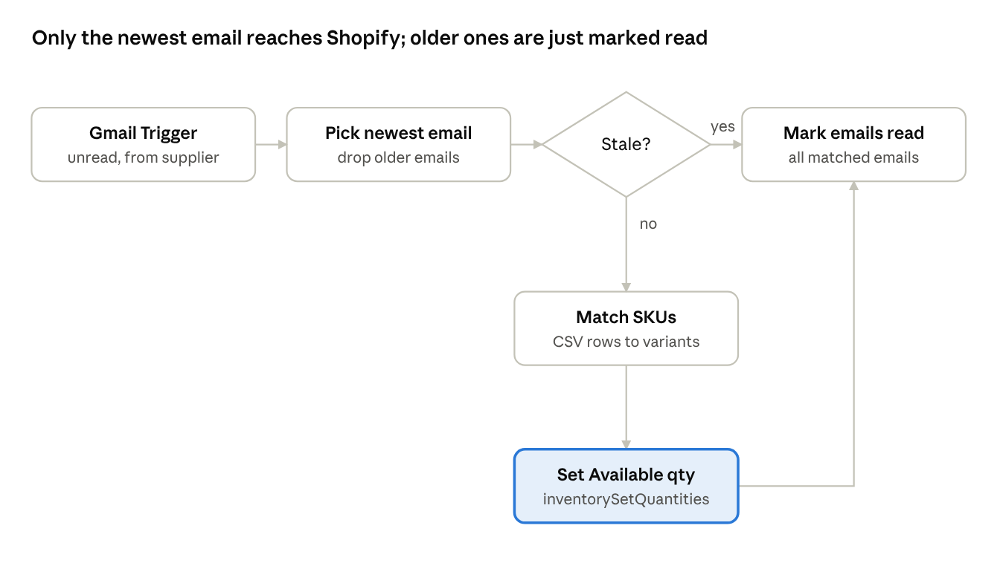

The problem
Many suppliers still send stock levels as a CSV or Excel file attached to an email. Someone opens it, finds each SKU in Shopify admin and types the new quantity. That is slow, error-prone, and it lags behind the supplier, so the store oversells or shows items out of stock that are actually available.
This guide builds a workflow that does the whole job:
- Polls Gmail for unread emails from the supplier that have an attachment.
- Keeps only the newest email, so an older file can never overwrite newer stock.
- Parses the CSV and matches each row to a Shopify variant by exact SKU.
- Sets the Available quantity at one location with the Admin GraphQL API.
- Marks the emails as read, so they are not processed again.

It runs on n8n Cloud or a self-hosted n8n, and uses Shopify's current API rules: 2026-04 and later require compare-and-swap quantities and an idempotency key on every inventory write.
1. Prerequisites
You need four things in place before importing the workflow: an n8n instance, Gmail OAuth, a Shopify app with the right scopes, and an agreed attachment format.
n8n, cloud or self-hosted
- Either an n8n Cloud workspace, or n8n self-hosted on a server (Docker or
npm install -g n8n), reachable at a URL such ashttps://n8n.your-domain.com. - If you self-host, the machine must stay on. If it sleeps or the container stops, the trigger stops polling.
Gmail OAuth (Google Cloud)
- In Google Cloud Console, create a project and enable the Gmail API.
- Create an OAuth client of type Web application.
- Add the redirect URI that n8n shows on the Gmail credential. It is your n8n URL followed by the callback path, for example
https://n8n.your-domain.com/rest/oauth2-credential/callback. Google rejects LAN IPs, so if you open a self-hosted n8n by IP, setN8N_EDITOR_BASE_URLto your HTTPS domain. - Set the OAuth consent screen to In production. In Testing mode, refresh tokens expire after 7 days and the trigger silently breaks every week.
- In n8n, create a Gmail OAuth2 credential with the client ID and secret, and sign in.
Shopify app (Dev Dashboard)
Since 1 January 2026, new legacy custom apps can no longer be created in the store admin. New apps are created in the Dev Dashboard and get tokens through the client credentials grant; each token expires after 24 hours, so the workflow requests a fresh one on every run.
- Create the app in the Dev Dashboard, under the same organization as the store.
- Go to Versions → create a version with the scopes
read_products,read_inventoryandwrite_inventory→ Release. - Install the app on the store from the app's Home tab. After any scope change, update or reinstall it so the store approves the new scopes.
- Copy the Client ID and Client secret from Settings.
- In n8n, create a Custom Auth credential:
{ "body": { "client_id": "YOUR_CLIENT_ID", "client_secret": "YOUR_CLIENT_SECRET" } }
Location ID
Inventory is set per location. Find the location's global ID with this query in GraphiQL or a test HTTP node:
{ locations(first: 10) { nodes { id name } } }Copy the full ID, for example gid://shopify/Location/88790925483. Using the wrong one is the most common reason updates "don't show" in admin.
Attachment format
The supplier file needs a SKU column and a quantity column. Header names are matched case-insensitively and can be changed in the config.
sku,qty,product_name
TSHIRT-BLK-S,25,Basic Tee Black S
TSHIRT-BLK-M,40,Basic Tee Black M
TSHIRT-WHT-M,"1,250",Basic Tee White MEvery variant you want updated must have Track quantity turned on in Shopify.
2. Execution
Import the workflow JSON, set five config values, select three credentials, test once by hand, then publish.
Step 1: Import and configure
- In n8n, go to Workflows → Import from File and pick the workflow JSON.
- Open Gmail Trigger and set the search query to your supplier:
from:supplier@example.com has:attachment is:unread. Paste the same query into Gmail search to confirm it finds the email. - Open the Build lookup batches Code node and edit the config block at the top:
const SHOP = 'your-store.myshopify.com'; const API_VERSION = '2026-07'; const LOCATION_ID = 'gid://shopify/Location/88790925483'; const SKU_COL = 'sku'; // header in the attachment const QTY_COL = 'qty'; - Select credentials on Gmail Trigger, Mark email read (Gmail OAuth2) and Get Shopify token (Custom Auth). Imported workflows never carry credentials, and a missing one fails with
NodeOperationError: Credentials not found. - If the supplier sends Excel, change Extract from File from CSV to XLSX.
Step 2: What each node does
| Node | What it does |
|---|---|
| Gmail Trigger | Polls every 5 minutes for unread matching emails and downloads attachments as attachment_0, attachment_1, … |
| Pick newest email | Sorts the emails by date and keeps only the newest; collects every email ID so all get marked read |
| Stale? | Compares the email's date with the last applied email; older or equal goes to the skip branch |
| Skip – mark read only | Marks stale emails read without touching inventory |
| Extract from File | Parses the CSV into one item per row |
| Build lookup batches | Builds a SKU → quantity map (strips thousands separators; last duplicate wins) and SKU search queries in batches of 50 |
| Get Shopify token | Exchanges client ID and secret for a 24-hour access token, once per run |
| Lookup variants by SKU | Queries productVariants to get each SKU's inventory item ID and tracking flag |
| Build inventory input | Keeps exact SKU matches that are tracked, builds the mutation input and the idempotency key |
| Set inventory quantities | Calls inventorySetQuantities with @idempotent |
| Check result | Fails the run on any userErrors, records the applied email's date, reports changes |
| Mark email read | Marks every processed email read |
Step 3: Shopify 2026-04 API rules
Two changes in API version 2026-04 break older inventory code. The workflow handles both.
Compare-and-swap is mandatory. Each quantity must carry changeFromQuantity: either the quantity you expect Shopify to have now, or an explicit null to opt out. The supplier file is the source of truth here, so the workflow sends null. The old compareQuantity and ignoreCompareQuantity fields are removed.
Idempotency is mandatory. Every call needs @idempotent(key: ...). Reusing a key returns the first result and changes nothing; reusing it with different input fails with IDEMPOTENCY_KEY_PARAMETER_MISMATCH. The workflow builds the key from the email ID plus a hash of the payload, so the same email and data are deduplicated, while changed data gets a new key.
mutation($input: InventorySetQuantitiesInput!, $key: String!) {
inventorySetQuantities(input: $input) @idempotent(key: $key) {
inventoryAdjustmentGroup {
id
changes { name delta quantityAfterChange item { sku } }
}
userErrors { code field message }
}
}A quantity entry looks like this:
{
"inventoryItemId": "gid://shopify/InventoryItem/50321394827435",
"locationId": "gid://shopify/Location/88790925483",
"quantity": 25,
"changeFromQuantity": null
}Step 4: Newest email wins
Inventory files are snapshots, so only the latest one matters. Without a guard, two problems appear:
- When several emails arrive between polls, rows from all of them are merged and the oldest file's values can win.
- When an older unread email is picked up on a later run, it overwrites newer stock with outdated numbers.
Pick newest email keeps only the latest email in each run. Check result stores that email's timestamp in the workflow's static data, and Stale? sends any email that is the same age or older down the skip branch, where it is only marked read. Static data is saved only in published (production) runs, not manual tests.
Step 5: Test, then publish
- Mark old test emails in Gmail as read.
- Send one email with the CSV attached from the supplier address.
- Click Fetch Test Event on the Gmail Trigger, then Execute Workflow.
- Check Set inventory quantities: a successful write returns an
inventoryAdjustmentGroup.idand achangeslist. - Publish (activate) the workflow. From then on, check runs under Executions, not on the canvas.
Publishing is not required for updates to happen: a manual run writes to live inventory too. Publishing only makes the trigger poll on its own. After activation, the trigger only picks up emails that arrive after that moment.
3. Test cases
Run these ten cases before going live; each names the input and the output to check in the execution.
Sample attachment
Replace the SKUs with real ones from your store. The extra rows exercise the parsing rules.
sku,qty,product_name
TSHIRT-BLK-S,25,Basic Tee Black S
TSHIRT-BLK-M,40,Basic Tee Black M
TSHIRT-BLK-L,0,Basic Tee Black L
TSHIRT-WHT-M,"1,250",Basic Tee White M
CAP-NAVY-OS,8,Baseball Cap Navy
CAP-NAVY-OS,10,Baseball Cap Navy (duplicate - last row wins)
NOT-IN-STORE-999,50,Unknown SKU
TOTE-NAT-OS,,Blank qtyCases
| # | Scenario | Input | Expected result |
|---|---|---|---|
| 1 | Happy path | One email, valid SKUs, new quantities | inventoryAdjustmentGroup.id returned; changes lists each SKU with its delta; email marked read |
| 2 | Zero stock | Row with qty = 0 | Available set to 0; product shows sold out if it doesn't continue selling |
| 3 | Thousands separator | "1,250" | Parsed as 1250 |
| 4 | Duplicate SKU | CAP-NAVY-OS twice (8, then 10) | Set to 10 |
| 5 | Unknown SKU | NOT-IN-STORE-999 | Listed in unmatched in Check result; other rows still update |
| 6 | Blank quantity | TOTE-NAT-OS with empty qty | Row skipped, no error |
| 7 | Untracked variant | SKU with Track quantity off | Listed in untracked; not updated |
| 8 | No change | Same file sent again with same values | inventoryAdjustmentGroup: null, no userErrors; nothing to change |
| 9 | Two emails at once | Older email (qty 40) and newer email (qty 25) unread together | Newer applied (25); both marked read |
| 10 | Late old email | Published workflow; an email older than the last applied one arrives | Routed to Skip – mark read only; inventory unchanged |
Errors you may hit
| Error | Cause | Fix |
|---|---|---|
Credentials not found | Credential not selected after import | Select it on the node and save |
ACCESS_DENIED for productVariants | App lacks read_products | Add scopes in a new app version, release, reinstall; check scope in the token response |
shop_not_permitted | App and store in different organizations | Create the app under the store's organization |
IDEMPOTENCY_KEY_PARAMETER_MISMATCH | Same key reused with different quantities | Build the key from email ID + payload hash |
inventoryAdjustmentGroup: null | Quantities already match, or the key was a repeat | Change a quantity and send a new email |
| Run succeeds, admin unchanged | Wrong LOCATION_ID or viewing another location | Check the location ID and the admin location filter |
| No executions after publishing | Email arrived before activation, was already read, or a self-hosted n8n was asleep | Send a new email; keep a self-hosted n8n running |
Wrapping up
Once published, the supplier's email becomes the inventory update: the newest file is applied within 5 minutes, and older ones are ignored.
Natural extensions: point an n8n Error Workflow at this one to get alerted on failures, send a summary of changes and unmatched SKUs to email or Slack after each run, or add an after: date filter to the Gmail query to limit how far back it looks.